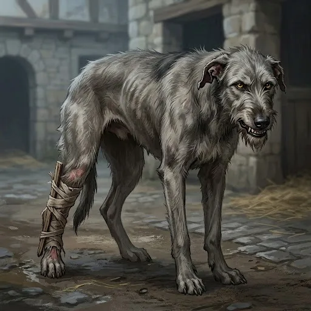

Ash
The grey hound from the House kennels
Only what the story has shown so far.
Appearance
A grey wolfhound bitch, long-boned, all rib and shoulder, with a rough, wiry grey coat gone darker along the back, yellow eyes, a grizzled beard and folded ears. Her hind leg is splinted in pine laths and linen, the hair worn off around it. Her lip comes up off her teeth with no sound at all before she bites.
Now
Last seen Chapter 4 · Between — Ready · Saint Ysolde's
In the arcade with a foot on the Captain's wooden sword. She did not fetch it.
Story so far
Relationships
- Toward Darrowcivil
- Ser Darrow of Edgemoorsleeps with her leg across his boot
She bit him through the thumb in the kennel run, then lay down with her splinted leg across his boot and slept.
The Reckoning
⟦ unread ⟧
Known facts
What the page has shown (7)
- She takes meat only from the Captain's left hand, with his right out of her sight.Chapter 4 · Scene 5 — The Lymer
- She growls at the grate in the kennel run, which the kennel-master says drains to the old cellars.Chapter 4 · Scene 5 — The Lymer
- Maelis judged her a wolfhound that somebody once fed well, whose leg will take her weight by the thaw if she does not run on it.Chapter 4 · Scene 5 — The Lymer
- She came off the bars to the name Ash and lay down with her splint across the Captain's boot.Chapter 4 · Scene 5 — The Lymer
- She took the fifth knucklebone when it went off the blanket and kept it under the Captain's cot.Chapter 4 · Between — The One We Tell the Second
- She came to the cloister a length behind the Captain's heel with the fifth knucklebone in her mouth.Chapter 4 · Scene 6 — Sitting Down
- When the Captain's sword skittered into the arcade she put a foot on it and would not bring it to him.Chapter 4 · Between — Ready